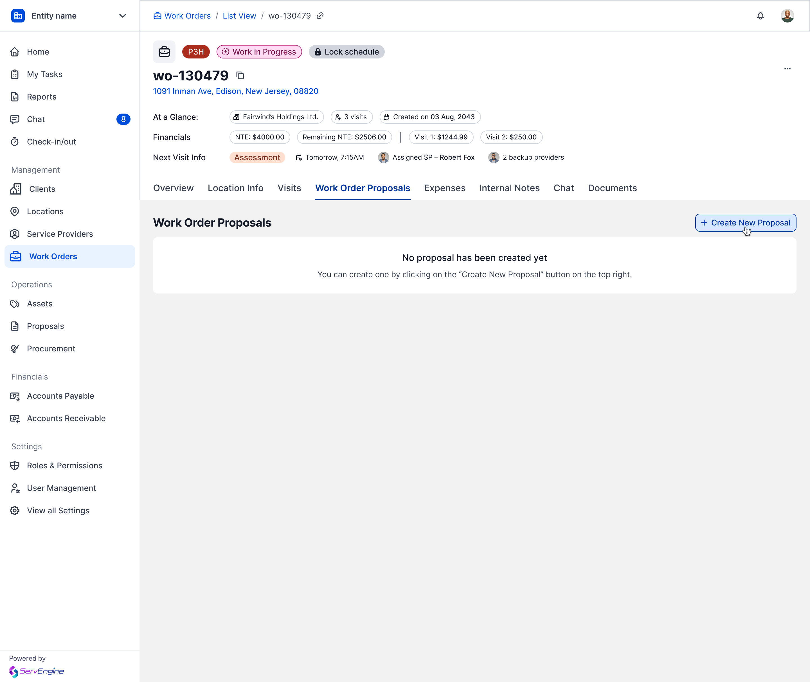
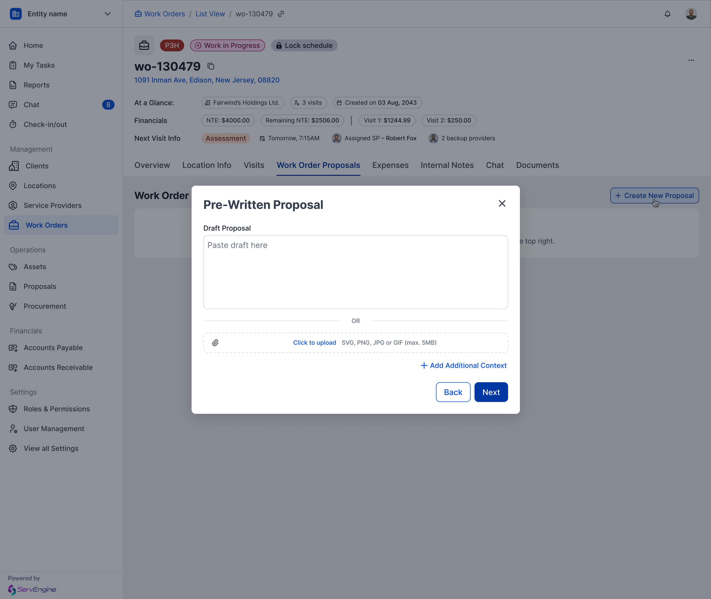
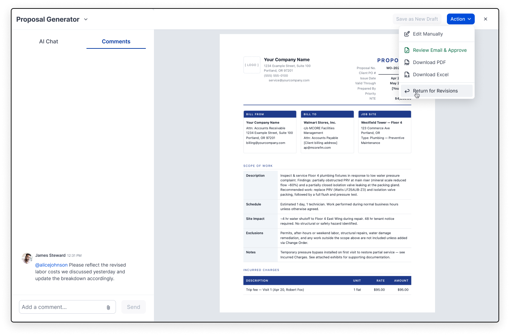
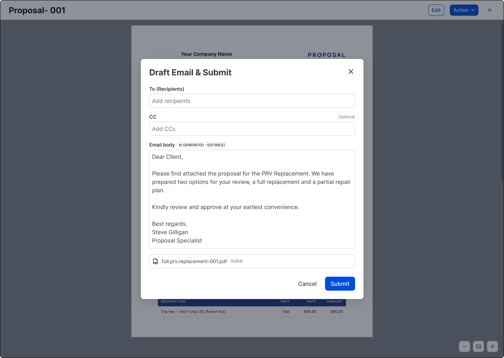
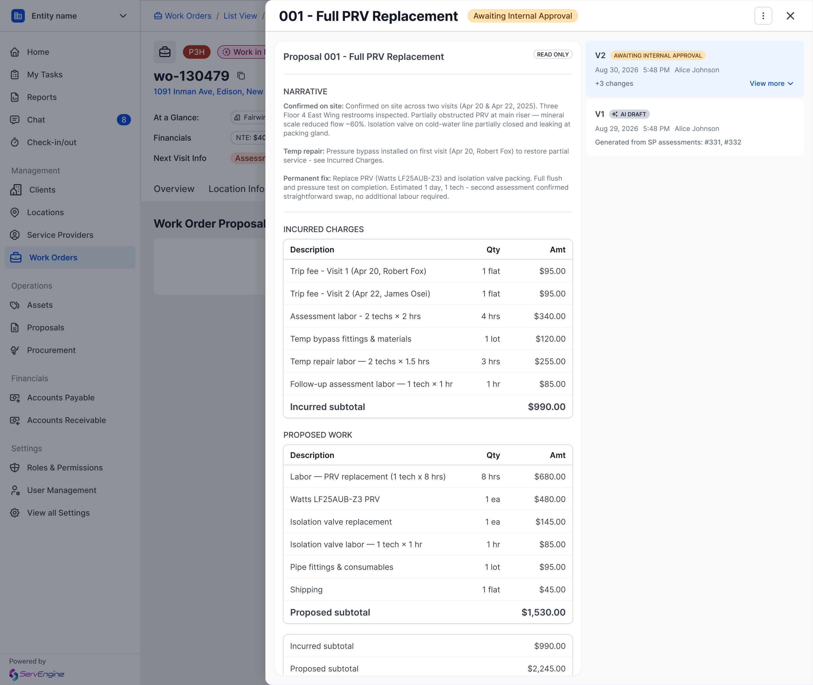
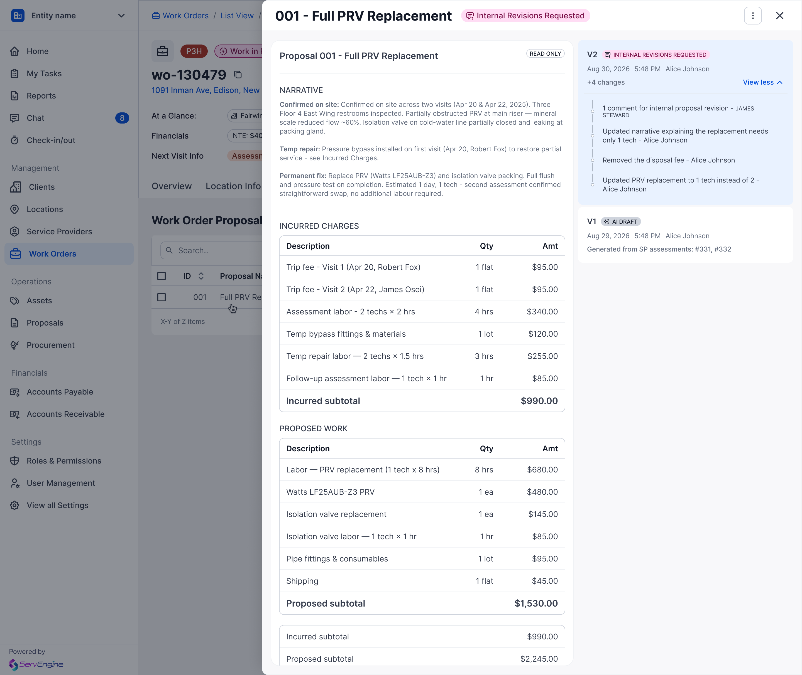
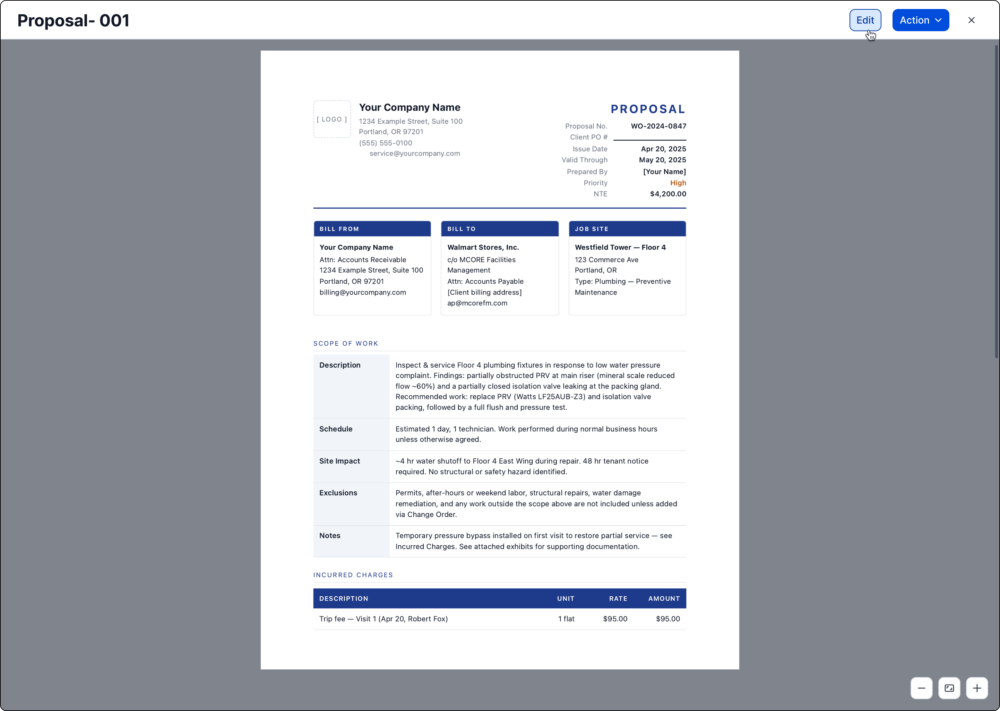

Replacing WhatsApp with an audit trail for every proposal.

Proposals were negotiated over email, and WhatsApp.
Work order proposals were sent manually via email, with the real back-and-forth happening informally over WhatsApp. That's a structural risk, not just an inconvenience: WhatsApp offers no audit trail, no access log, and no recoverable record. Conversations can be deleted at will, and when someone leaves the company, the conversation history leaves with them. For a workflow where pricing gets negotiated and scope gets revised, that meant no reliable record of what was actually agreed to, and things slipped through the cracks.

Status lifecycle as the backbone
Every proposal moves through a defined path: draft, internal approval, client approval, approved or rejected, with revision loops at each stage, and every edit or status change generates a new version. The audit trail builds itself.
An AI assistant, not a black box
Requested directly by stakeholders: staff shouldn't need Word or Excel formatting skills to produce a clean proposal, and should have an assistant that catches what they might miss. Built as a conversational panel beside a live document preview, so every AI edit is visible and reversible in context, never a silent rewrite.
Deliberate, not automatic, transitions
The system never guesses that a proposal was sent or that a client responded; the user marks each transition explicitly. A considered tradeoff, to keep the audit trail intentional and accountable rather than inferred.



Every version, every author, every decision, in one place.
As a proposal moves through internal revisions, client feedback, and rejections, each version is preserved with who changed what and when. This replaces what used to be scattered across inboxes and phones.



Depth without disrupting the rest of the platform.
The proposal module doesn't exist in isolation. It sits inside the broader ServEngine work order system, alongside Visits, Expenses, Internal Notes, and Documents, all built by the wider design team under a shared lead. Part of the job was making the proposal lifecycle feel deep and considered on its own, while staying visually and behaviorally consistent with tabs and patterns other designers were shipping in parallel: the same status-pill language, the same three-dot menu conventions, the same version-history pattern that other modules could eventually reuse. As a senior designer delegating pieces of this work to others on the team, a lot of the effort went into documenting these conventions clearly enough that they'd hold up across contributors, not just in my own screens.
Where this goes next.
Learning from past proposals
Surfacing pricing and scope patterns from previously approved proposals as suggestions inside the AI Generator, rather than starting each one cold.
Client-side visibility
A read-only client view of the version history, so approvals don't require trusting a summary; the client can see exactly what changed.
Field-level permissions
Extending the granular permission work already underway so different roles see and edit only the parts of a proposal relevant to them.
What this project taught me.
The instinct with an AI-assisted editor is to make it feel magical: invisible, one-click, done. What I learned building this is that for a document with financial and legal weight, invisible is the wrong goal. People needed to trust every change the assistant made, which meant the interface had to slow down just enough to show its work: the chat log, the diff-like version history, the explicit "what changed" summary after every edit. Designing restraint into an AI feature, making sure it explains itself rather than just acting, turned out to be the actual design problem, not the AI capability itself.
One record, from conception to client approval.
Shipped and in use. The win wasn't primarily about saved time, it was replacing scattered email threads and disappearing WhatsApp conversations with a single, complete, authoritative trail of everything that happened to a proposal.